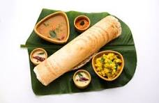

idli

Description
Crispy, thin pancakes made from a fermented rice and urad dal batter.
They are typically served with sambar and coconut chutney and can be enjoyed plain or with various fillings like potatoes or onions.
Ingredients
- 1 cup urad dal (split black gram)
- 2 cups idli rice or parboiled rice
- 1/2 teaspoon fenugreek seeds (optional)
- Salt to taste
- Water as needed
Steps
- Prepare Batter: If you haven’t already, soak urad dal and rice as described for idli. Grind soaked urad dal and rice together with enough water to form a smooth, slightly thick batter. The consistency should be pourable but not too runny. Ferment the batter as described for idli.
- Cook Dosas: Heat a non-stick or cast-iron skillet over medium heat. Lightly grease the pan with oil or ghee. Pour a ladleful of batter onto the pan and spread it in a circular motion to form a thin, even layer. Drizzle a little oil or ghee around the edges. Cook until the dosa becomes golden brown and crispy, and then flip if you prefer a softer texture. Remove from the pan and keep warm.
- Serve: Serve dosas hot with sambar and coconut chutney.